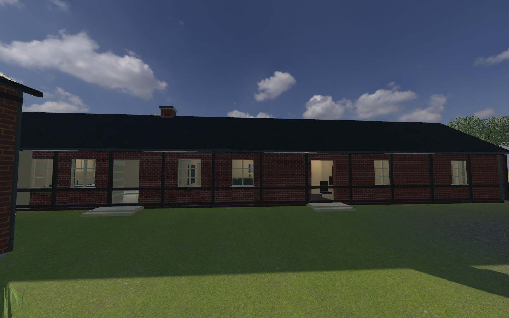

SVENSKT GÅRDSÄVENTYR · WINDOWS v0.7.0
Vallarum – Sista skörden
Hjälp Börje genom fyra uppdrag bland gårdar, fält och märkliga fiender. Kör traktorn, utforska Elldala och håll pannlampan nära när natten kommer.
Ladda ned för Windows
Nyheter och kontrollsumma
Webbversionen är pausad tills vidare.
Den behöver förbättras innan den går att provspela här igen. Använd Windowsversionen under tiden.

Kom igång
- Hämta ZIP-filen och packa upp hela innehållet till en egen mapp.
- Starta Vallarum.exe. Behåll övriga filer och mappar tillsammans med spelet.
- Välj Nytt spel och prova den valfria introduktionen.
Unity behöver inte installeras. Spelet kräver Windows 64-bit, mus och tangentbord.
Nytt i v0.7.0
Äggregatet 3000 låter dig skjuta surägg medan du kör. Börje, vapnen, fienderna och den röda veterantraktorn har förbättrade modeller och detaljer. De nya Suno-effekterna är ännu inte importerade.
Standardkontroller
WASD: rörelse · Mus: sikta · Vänsterklick: vapen · R: ladda om · E: interagera · F: traktor · L: pannlampa · M: karta · J: journal · Esc: paus. F11 eller Alt+Enter växlar fullskärm.